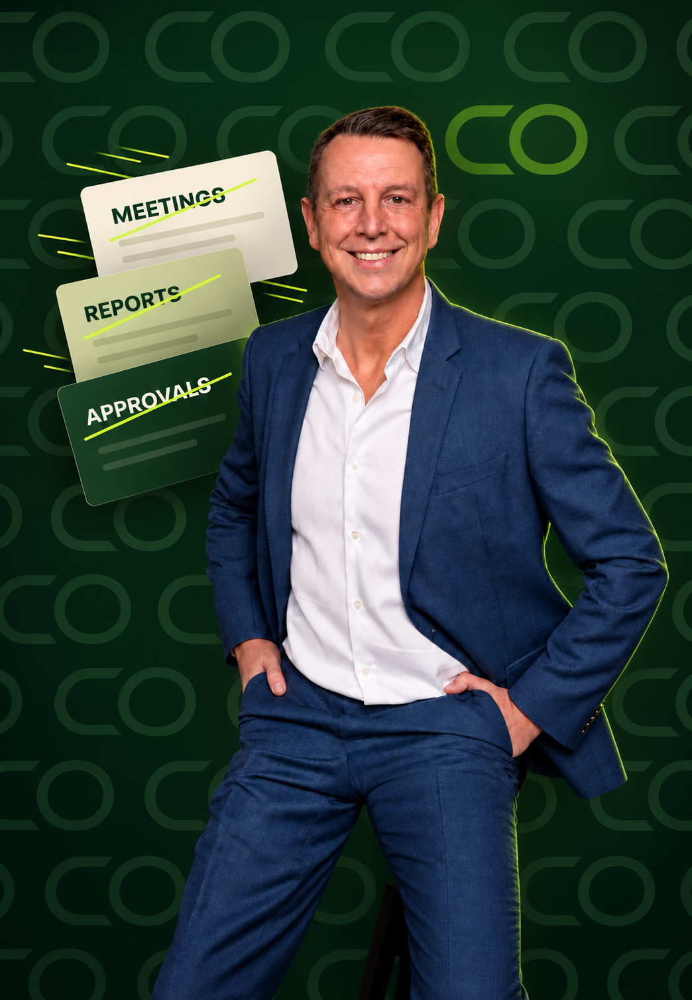

OPS Detox Diagnostic™
Before anything is stripped, we measure where the time and the decisions actually go. You, your key people and your team answer the same questions, where the answers differ, the clutter sits.
Book the free diagnosticWe help scale-ups cleanse the systems clogged by meetings nobody needs, reports nobody reads and decisions nobody takes, so time flows back into growing the company.

Trusted by ambitious leaders and founders at
Most scale-ups don't have a strategy problem. They have a company full of work that piled up as they grew, meetings that outlived their purpose, reports nobody reads, decisions that wait on founder’s desk, all kept alive by one sentence: "that's how we've always done it."
OPS Detox clears out what growth left behind. Together with your team, we strip away the meetings, reports and approval layers that no longer serve the business, and rebuild a structure your people can run on their own, long after we have left.
Before anything is stripped, we measure where the time and the decisions actually go. You, your key people and your team answer the same questions, where the answers differ, the clutter sits.
Book the free diagnosticFor founders whose company has become meeting-heavy, buried in reports and dependent on their approval. We strip the operating rhythm back to what earns its place, so work and decisions no longer route through one desk.
Learn moreFor companies where delegation, accountability and information no longer keep pace with growth. We rebuild how information moves, who owns what and how early the truth is spoken, so the company holds its shape when you step back.
Learn moreFewer meetings, fewer reports, faster decisions
less non-essential meeting time. Up to €8K reclaimed per employee
faster decision cycles
Less escalation, faster execution
less reporting overhead
€50K+ reclaimed capacity per team/year
tooling & SaaS cost optimization. €150K-300K on a €1M spend
Oscar de Grauw is a TEDx keynote speaker and workshop facilitator. Book him for a few intensive hours with your leadership team: in the Speak Up Gym and over the Out Loud card game, people practise saying the uncomfortable thing out loud, and the clutter starts to show.
Book Oscar to speak“We finally saw which meetings, reports and approval steps were slowing the company down—and what to remove first.”
“The team left with clearer ownership, faster decisions and a system they could continue running without outside support.”
“Oscar made the operational clutter visible. The conversations became more honest and the next actions became obvious.”
“Instead of adding another framework, OPS Detox helped us simplify how information, decisions and accountability move.”
I spent 17 years inside complex, international organizations, working across borders, departments and leadership levels. I've seen strategies succeed and fail because day-to-day operations couldn't keep up.
I don't approach your organization as an outsider with a framework. I work from the inside out, focusing on how work really flows.
My work is built on proprietary frameworks: The CORE method™, OPS Detox, Truth Latency™, Async Mastery™, Speak Up Gym™ and DRMT™ (the decision engine). You get a repeatable, structured approach that scales.
More about OscarClarity is the default. Switch back to see the noise.
Operational noise compounds. Every month it remains, the cost grows and the damage is already deeper than you think.
A modular system for the real bottlenecks in how work flows. Each module stands alone; together, they reset how the company runs.
Tagline
Module detail copy still to come from the client’s current website. This popup is wired and ready for it.